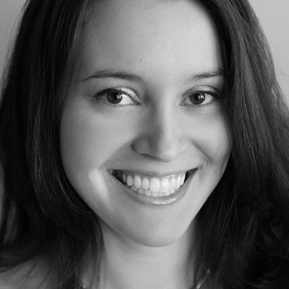
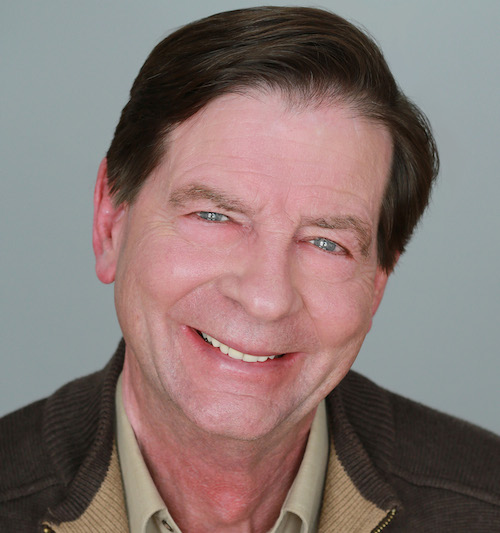
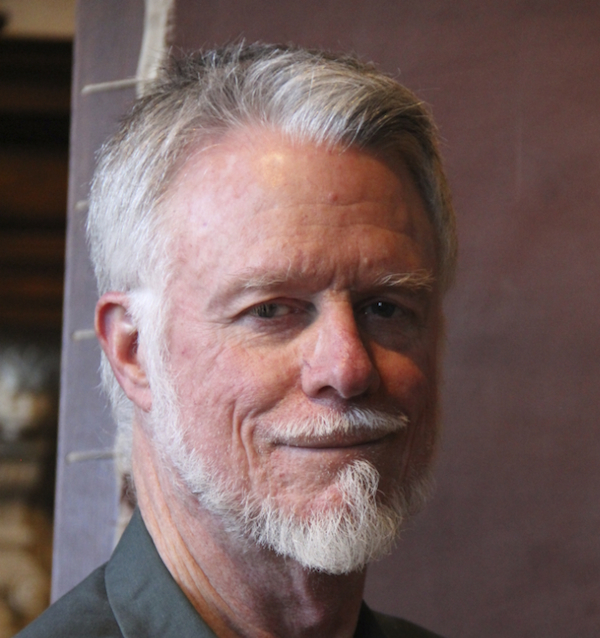
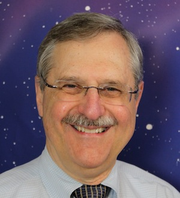
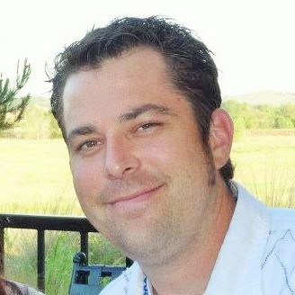
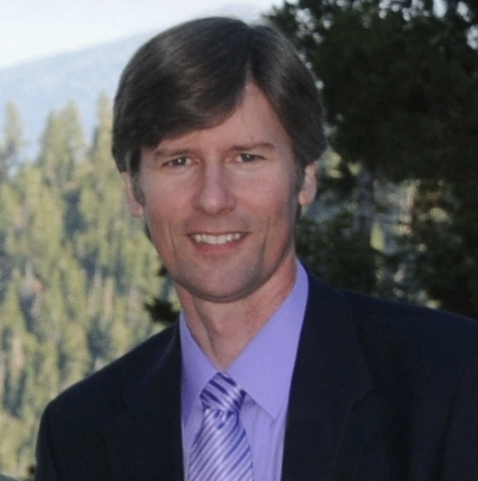
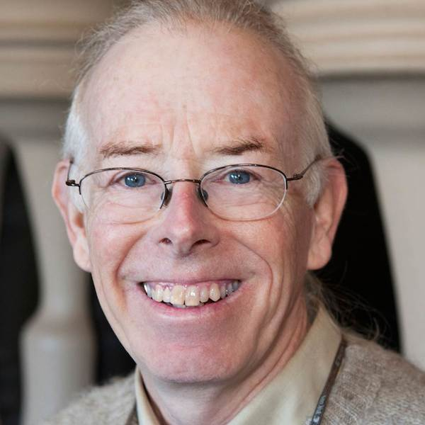
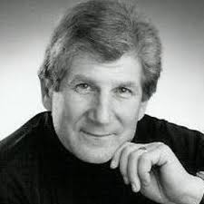

SkeptiCal is the Northern California conference of science and skepticism, a day-long event with speakers, panels, and discussions on a wide array of subjects.
Last year we had speakers covering a wide variety of topics, including legends, hoaxes, and frauds of science, the search for extra-terrestrial intelligence, medical ethics, grassroots skepticism, and more. You can see a list of last year's speakers, as well as 2012's list.
Location
Oakland Asian Cultural Center, 388 9th Street, Oakland, CA.
Speakers
-

Sheril Kirshenbaum
Science Literacy in the 21st Century
Sheril Kirshenbaum works to enhance public understanding of science and improve communication between scientists, policymakers, and the public. She is the Director of The Energy Poll at The University of Texas at Austin and the author of two books, Unscientific America (with Chris Mooney) and The Science of Kissing. Her writing regularly appears in magazines, newspapers, and scientific journals and she has been featured in the Best American Science Writing anthology series. Previously, Sheril worked with the Webber Energy Group and Duke University's Nicholas School of the Environment. She has been a Marshall Memorial Fellow, a Next Generation Project Texas Fellow, and a legislative Knauss Science Fellow on Capitol Hill with Senator Bill Nelson (D-FL) where she was involved in energy, climate, and ocean policy.
-

Patrick O'Reilly
Cons, Scams and Undue Influence
Internet Scams, Ponzi schemes, real estate rip-offs, weird cults, fortune-telling cons – it’s hard to read the news without finding another successful con artist at work. As the number of scams and victims grows, the term “undue influence” is gaining widespread use. Dr. O’Reilly will explain the vulnerabilities that these scammers look for and techniques they use to steal from us.
Patrick O'Reilly is a clinical psychologist and an assistant clinical professor of psychiatry at the University of California, San Francisco School of Medicine. He is Past President of the San Francisco Psychological Association and former Chair of Bay Area Skeptics.
-

Dan Dugan
Thirteen Years to Failure: A Federal Lawsuit to Stop Public Funding of Cult-Like Waldorf Schools
In 1996, the opening of the Internet to the general population brought together a diverse group of former Waldorf school parents, teachers, and board members who all had experiences with Anthroposophy, the world-wide organization behind Waldorf schools. At the same time, Waldorf schools began to receive public funding as magnet and charter schools. PLANS was incorporated as a non-profit that could bring legal action against perceived violations of the Establishment Clause of the U.S. Constitution, which forbids public funding of religious activities. A lawsuit was filed in federal court against two California school districts. First Amendment lawsuits take many years, and this was no exception. Despite three favorable rulings from the 9th Circuit Court of Appeals over the years, the case was dismissed in 2012 after the appeals court opined that there was no significant evidence left. The dismissal was without prejudice, however, and the way was left open to start all over again.
Dan Dugan is well-known in audio engineering as the inventor of the automatic microphone mixer. His patented equipment is used on many popular television productions including PBS News Hour, the presidential debates, and ESPN sports. In addition to engineering, Dan has a lively interest in philosophy, particularly skepticism, the philosophy of science, and current controversies about scientific paradigms and alternative medicine. He is the Secretary of PLANS (People for Legal and Nonsectarian Schools, Inc.), a whistle-blowing organization opposing taxpayer funding of Waldorf education.
-
Ben Santer
A Discernible Human Influence on Global Climate
Human-caused climate change is not a hypothetical future event. It is real, and we are experiencing it in our lifetimes. Despite the compelling evidence of human effects on global climate, there is a continuing need for scientists to answer the question “How do we know it’s us?” The first part of my talk will briefly summarize the scientific underpinning for “discernible human influence” conclusions of the Intergovernmental Panel on Climate Change (IPCC) and the U.S. National Academy of Sciences (NAS). The focus will be on so-called “fingerprint” studies. Such studies use complex computer models of the climate system to understand how geographical patterns of temperature and moisture (and many other climatic variables) may change in response to human influences. Fingerprinting involves searching for model-predicted "human influence" patterns in observational climate records. The message from this body of research is that observed changes in many different (and independently-measured) aspects of the climate system cannot be explained by natural causes alone.
Ben Santer, Ph.D, is an atmospheric scientist at Lawrence Livermore National Laboratory (LLNL). His research focuses on such topics as climate model evaluation, the use of statistical methods in climate science, and the identification of natural and human “fingerprints” in observed climate records. Santer’s early research on the climatic effects of combined changes in greenhouse gases and sulfate aerosols contributed to the historic “discernible human influence” conclusion of the 1995 Report by the Intergovernmental Panel on Climate Change (IPCC). His recent work has attempted to identify human fingerprints in a number of different climate variables, such as tropopause height, atmospheric water vapor, the temperature of the stratosphere and troposphere, ocean heat content, and ocean surface temperatures in hurricane formation regions.
-

Andrew Fraknoi
Nancy Reagan’s Astrologer, Jetology, and the Zoodiac: An Astronomer Looks at Astrology
This light-hearted talk explores the popularity of the “fiction science” called astrology, examines its origins thousands of years ago, and then presents some of the many scientific tests that astrology has failed in our time. We’ll take a quick look at how an astrologer came to have influence in the Reagan White House. And we’ll also discuss a “competing” theory called “jetology” where the position of all the jumbo jets at the moment of your birth can help illuminate your destiny and love life.
Andrew Fraknoi is the Chair of the Astronomy Department at Foothill College (where he teaches courses on astronomy and physics for poets to 900 students per year) and the former Executive Director of the Astronomical Society of the Pacific. In 2007, he was selected as the California Professor of the Year by the Carnegie Endowment for Higher Education and won the Gemant Prize of the American Institute of Physics for a lifetime of contributions to combining physics and culture. He is a Fellow of the Committee for Skeptical Inquiry, specializing in debunking pseudoscience connected with astronomy. Fraknoi is the lead author of a college astronomy textbook, Voyages Through the Universe, and wrote a book for children, Disney’s Wonderful World of Space. He appears regularly on local and national radio explaining scientific developments in everyday language. The International Astronomical Union has named asteroid 4859 Asteroid Fraknoi in recognition of his contributions to the public understanding of astronomy.
-

Frank Mosher
Kids, Science, and Skepticism... For Adults!
Our children are our future... future voters, future consumers, future politicians, future adults. Our best hope for the future is to raise a generation of critical thinkers, a generation of people who understand why science works, and why we should care about what science has to tell us. So how do we do this? How do we show children how exciting science is, how powerful of a tool critical thinking is? In this hour we will learn some tools and techniques for getting kids excited about learning science and being skeptical.
Frank Mosher works as a Mad Scientist for Mad Science of Sacramento Valley. He teaches hands-on science enrichment in schools and for organizations throughout Sacramento and the surrounding areas, both in the classroom and after-school, as well as designing and implementing science summer camps. Frank also serves as the President for the Sacramento Area Skeptics.
-

Sheldon W. Helms
Psychological Pseudoscience
As doctors battle homeopathy and anti-vaccine myths, anthropologists counter creationist claims, and dietitians deal with the unwarranted battle against gluten and GMOs, much of the skeptical community is oddly silent on dubious claims from fringe psychology. In this talk, psychology professor Sheldon W. Helms will discuss unsupported and sometimes dangerously pseudo-scientific claims from the field of psychology, giving a brief history and explanation of each practice or theory, and demonstrating how a simple application of the scientific method reveals its flaws.
Sheldon W. Helms is an associate professor of psychology at Ohlone College in Fremont, CA. He serves on the Board of Directors for the Bay Area Skeptics, is a member of the SkeptiCal planning committee, and is the founder of the Ohlone Psychology Club Speaker Series through which he regularly hosts top name speakers in science and skepticism.
-

Paul Doherty
The Boundaries of Science
If you plot every object we know in the universe on a graph of mass versus radius all of the objects appear within a triangle of three lines: the event horizon of a black hole, the radius of the visible universe and the compton wavelength. Inside this triangle we can do experimental science. Outside of this triangle we can theorize but cannot test our theories. Scientists always push on the boundaries and as we make progress pushing experiments into new realms we expand the boundaries of science.
Paul Doherty is a Senior Staff Scientist and Director of the Teacher Institute at the Exploratorium where his main job is helping high school science teachers make science relevant, interesting, correct and fun.
-

Norm Goldblatt
Science Comedy
Norm Goldblatt performs his science comedy all over the San Francisco Bay Area: at nightclubs, comedy clubs, corporate events, private parties, and fundraisers. His humor touches on technology, science, politics, and the human condition. His quips were quoted regularly by the late great Herb Caen in the San Francisco Chronicle, and his jokes were heard on the Tonight Show with Jay Leno.
Schedule
| Time | Slot | Talk |
|---|---|---|
| 8:30AM-9:00AM | Registration / Exhibitors' Tables Open | - |
| 9:00AM-10:00AM | Sheril Kirshenbaum University of Texas at Austin | Science Literacy in the 21st Century |
| 10:10AM-11:10AM Breakout 1 | Patrick O'Reilly University of California, San Francisco School of Medicine | Cons, Scams and Undue Influence |
| 10:10AM-11:10AM Breakout 2 | Dan Dugan People for Legal and Nonsectarian Schools, Inc. | Thirteen Years to Failure: A Federal Lawsuit to Stop Public Funding of Cult-Like Waldorf Schools |
| 11:10AM-11:30AM | Short Break | Please visit the exhibitors' tables! |
| 11:30AM-12:30PM | Ben Santer Lawrence Livermore National Laboratory | A Discernible Human Influence on Global Climate |
| 12:30PM-2:00PM | Lunch Break | - |
| 2:00PM-3:00PM | Andrew Fraknoi Foothill College | Nancy Reagan’s Astrologer, Jetology, and the Zoodiac: An Astronomer Looks at Astrology |
| 3:10PM-4:10PM Breakout 1 | Frank Mosher Mad Science of Sacramento Valley | Kids, Science, and Skepticism... For Adults! |
| 3:10PM-4:10PM Breakout 2 | Sheldon W. Helms Ohlone College, Fremont, California | Psychological Pseudoscience |
| 4:10PM-4:30PM | Short Break | Please visit the exhibitors' tables! |
| 4:30PM-5:30PM | Paul Doherty San Francisco Exploratorium | The Boundaries of Science |
| 5:30PM-6:00PM | Norm Goldblatt | Science Comedy |
Exhibitors
- Atheist Advocates of San Francisco - East Bay Atheists & Atheist Advocates of San Francisco work closely together for the advancement of critical thinking in all spheres of knowledge, especially through political activism.
- Atheist Alliance International - Atheist Alliance International (AAI) is a global federation of atheist and free thought groups and individuals that is committed to educating its members and the public about atheism, secularism, and related issues, and to being a positive global voice for atheism and secularism.
- Bay Area Humanists - The purpose of the Bay Area Humanists is to promote humanism: an ethical, democratic, naturalistic lifestance that prioritizes reason, scientific and critical thinking, and a system of humanist ethics and secular values as a rational alternative to those based on religion.
- The Bone Room - The Bone Room is a Natural History Store with real bones, insects and fossils - like a museum, but you can take the exhibits home!
- Camp Quest - A weeklong summer camp program for children ages 8-17, from non-religious families, to experience the awe and wonder of science and the great outdoors while learning about leadership and building lifelong friendships.
- CFI-SF/IIG-SFBA - The Center for Inquiry SF (CFI-SF) is a local branch of Center for Inquiry whose mission is promotion of a society based on science, reason, freedom of inquiry and secular values. The Independent Investigations Group SF Bay Area administers a $100,000 prize for anyone who can demonstrate a paranormal ability under controlled conditions. (So far, no one has).
- East Bay Atheists - East Bay Atheists & Atheist Advocates of San Francisco work closely together for the advancement of critical thinking in all spheres of knowledge, especially through political activism.
- The explOratorium Explainers - The Exploratorium is a museum of science, art, and human perception. For more than forty years, we’ve built creative, thought-provoking exhibits, tools, programs, and experiences that ignite curiosity, encourage exploration, and lead to profound learning.
- East Bay Skeptics Society - The East Bay Skeptics Society is a local non-profit, member-governed organization dedicated to the advancement of reason, science and intellectual integrity -- and to the exposure of superstition, fraud and pseudoscience.
- National Center for Science Education - Defending and promoting the teaching of evolution and climate science.
- Reason4Reason - Reason4Reason is a group of rational thinking activists in the San Francisco Bay Area working to grow the modern skeptical movement and hamper northern California pseudoscience from exporting irrational thinking around the world.
- Sacramento Area Skeptics - Sacramento Area Skeptics is a 501(c)(3) non-profit dedicated to promoting scientific skepticism in the Greater Sacramento Area through organizing social events and educational activities.
- Secular Coalition for California - The Secular Coalition for California is a state chapter of the Secular Coalition for America, a 501(c)(4) political advocacy organization whose purpose is to amplify the diverse and growing voice of the nontheistic community in the United States.
- Secularity Clothing - Secularity Clothing is an independent clothing brand from the Bay Area that focuses on promoting secular values, eco-friendlyness, and compassionate living with simple designs on organic material.
- The SETI Institute - The SETI Institute is a private, nonprofit organization dedicated to scientific research, education, and public outreach on the origin, nature, and prevalence of life in the universe.
- Skeptic Action and Guerilla Skepticism - Because crowd-sourced scientific skepticism is cool. Join us!
- Smarty Womyn - Smarty Womyn is an organization devoted to providing healthy role models for girls in science, technology, engineering and mathematics.
- Sunday Assembly East Bay and Silicon Valley - The Sunday Assembly is a godless congregation that celebrates life and that embraces the motto: "Live better, help often, wonder more."
- University of California Observatories - Lick Observatory - The Lick Observatory is a Multi-campus Research Unit of the University of California, providing UC astronomers with a state-of-the-art astronomical research and education facility.
- Wonderfest, the Bay Area Beacon of Science - Through in-person and online presentations, Wonderfest aspires to stimulate curiosity, promote careful reasoning, challenge unexamined beliefs, and encourage life-long learning.
- If you'd like to be an exhibitor at SkeptiCal, please contact us!
Contact
Email us at info@skepticalcon.com if you have any questions. Hope to see you at the conference!